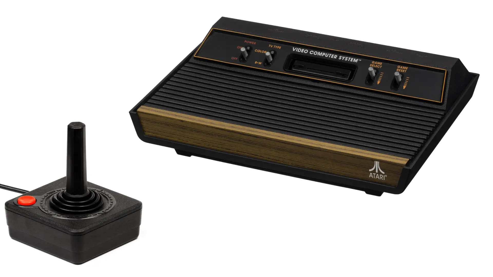

Joystick Hack
What follows is the first electronics mod I did as a child, with no artifacts to show for it. Circa late 1980s.
We didn't have digital cameras back then and I didn't have the foresight to take process photos using a regular camera, and didn't even think of keeping the modded monstosity as a keepsake. You'll just have to take my word for it. All images shown are others' photos from the Internet. Sigh.
The priming
Growing up, we had an Atari 2600 Video Game Console, with CX40 joysticks to go with it. An issue with the joytics, or our forceful usage of them was, the metal dome switches on the circuit board used to crack and flatten, causing the joystick to malfunction towards one or more directions.

My architect/photographer/audiophile dad wasn't shy of cracking open electronics to do simple repairs. A single demonstration on how to open a joystick to unbend and reposition the metal contacts launched me on my DIY electronics repair journey. I performed all future joystick repairs.
The circuit board and its wiring was very simple to intuitively understand for an uninitiated kid: Just 6 wires for ground, the 4 directions and the fire button. (See: Atari 2600 Field Service Manual, 7-1 & 7-2.)

The opportunity
Fast forward to many years later. I'm visiting my cousin and we're gaming on his Commodore 64. My cousin has autofire joysticks, which I never bothered buying. One of his autofire joysticks is physically broken and he was preparing to toss it out in the garbage. I said I wanted to examine it and took it from him. After my innate understanding of a standard non-autofire joystick, I was very curious about what made these autofire joysticks tick.
I know nothing about electronics beyond "if you touch two metals, electricity flows through them" at this point.
The hack
I take the joystick home, unscrew the housing and start examinig the PCB. The jostick is physically broken (I don't remember the specifics), but the PCB is intact. Superimposing my knowledge of a basic joystick on top of the incomprehensible circuit elements of the autofire PCB, I was able to reverse-engineer this much: An extra +5V wire runs into the joystick. I use my dad's circuit tester to verify. The contact parts are mostly the same, but there's this island of circuity that must be the source of the autofire.
https://www.c64-wiki.com/wiki/Quickshot https://www.petervis.com/Sinclair/Commodore_Atari_Sinclair_Spectrum_Joystick/Commodore_Atari_Sinclair_Spectrum_Joystick_Inside.html
https://www.oldcomputr.com/spectravideo-quickshot-ii-1983/
https://www.rodusilighting.com.au/product-page/double-pole-push-button-switch https://www.vintagecaravanspares.com.au/product-details/1149
And here's the literal hack: I hacksawed the autofire bit out of the broken joystick, and soldered it into a non-autofire joystick (QuickShot I) that I was using with my Atari ST. I ran a single wire I salvaged from on old headphone and superglued it along the 6-pole wire of the standard joystick. I replaced the top fire button of my joystick with a lamp toggle switch, which fit perfectly into the opening. IT WORKED! I had a Frankenstein's monster of a joystick with an autofire circuit retrofitted on it like a parasite. I had click the toggle switch on the top to turn on autofire and click again to turn it off.
Courage, luck, success. Whatever confidence I had in all the other electronics mods I did in later life, I trace back to this first hack.
Literal hack, with a hacksaw involved.